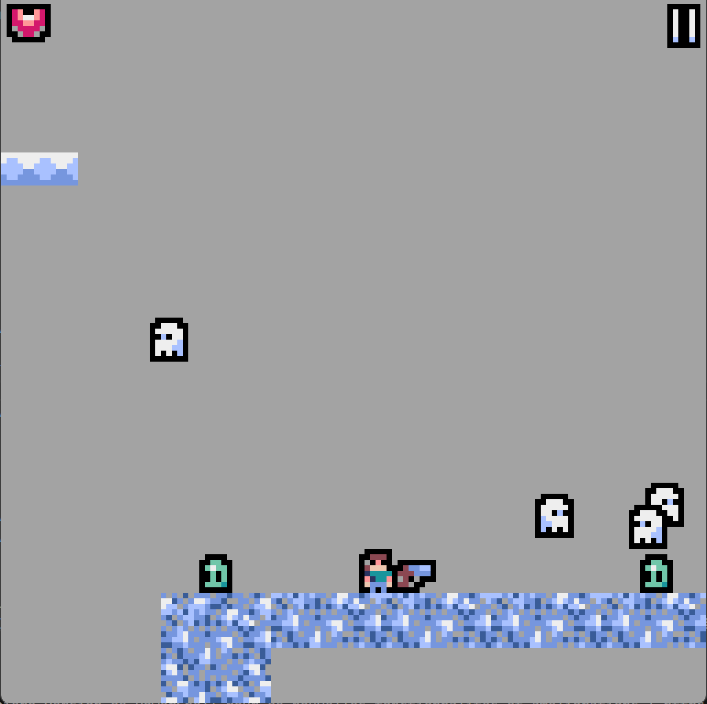
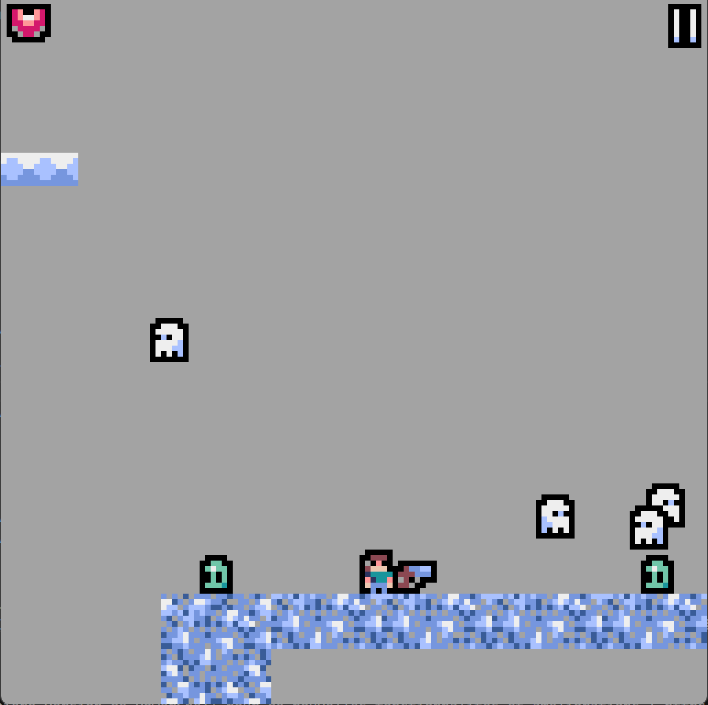

Nolan Correard
Je suis un jeune étudiant en informatique de 18ans, je ne ne suis donc pas encore un spécialiste du developpement mais je suis passionné, et je fait tout mon possible pour un jour en faire mon metier, j'ai donc décidé de créer ce site pour vous montrer mes projets et mes compétences dans divers domaines.
-

Appris en 2023, en terminal NSI, plusieurs projet effectuer avec ce langage notament des petit jeux.
-

-

-

-


2020 - 2023 : Lycée Choiseul
Au début de mes années lycée, j'avais le désir de devenir motard de la gendarmerie. Néanmoins, j'ai opté pour des spécialités scientifiques afin d'acquérir une bonne base au cas où je changerais d'avis.
C'est en première année que j'ai été introduit à la NSI (Numérique et Sciences Informatiques) et que j'ai développé un véritable engouement pour le domaine du développement.
2023 - NOW : IUT 2 Grenoble
Actuellement inscrit en BUT informatique à l'IUT 2 de Grenoble, j'avais initialement envisagé de me concentrer sur le développement de jeux vidéo. Cependant, au fil du temps, j'ai découvert un intérêt tout aussi fort pour le développement web.
Par conséquent, j'ai décidé de consacrer mes efforts à perfectionner mes compétences dans ce domaine et à apprendre de nouveaux langages pour améliorer mes sites web.

Nuit Du Code 2023
La Nuit du Code, c'est une game jam survoltée où des étudiants de tous les lycées français à travers le monde se réunissent pour une nuit de pure créativité.
Imaginez ça comme un marathon de codage où vous formez des équipes de 2 à 3 personnes et avez 6 heures pour concevoir un jeu vidéo épique. Vous avez le choix : utiliser des textures fournies ou créer les vôtres à partir de zéro.
C'est comme une compétition amicale où les idées fusent, les claviers s'activent, et à la fin de la nuit, on découvre toutes les pépites ludiques qui ont émergé de cette frénésie créative. Alors,
préparez-vous à plonger dans le monde du développement de jeux, à collaborer avec des esprits brillants et à voir naître des petits jeux incroyables en un temps record !
Notre petit jeu
Au premier regard sur les différents packs de textures fournis pour la Jam, nous avons été immédiatement attirés par celui-ci. Ce qui nous a particulièrement convaincus sont les deux petits personnages, les monstres, l'arme à feu et les diverses textures pour l'environnement.
En tenant compte de ces éléments, nous avons envisagé de créer un petit RPG/Plateformer, un choix audacieux pour une compétition de cette nature. En effet, cela implique que le jeu est à sage unique et, de surcroît, le temps limité pour le développement a conduit à des niveaux plutôt courts, ce qui confère au jeu une durée de vie estimée à seulement 10-15 minutes sans recommencer à plusieurs reprises.
Pour ce faire, nous avons élaboré une trame narrative typique des RPG, avec pour objectif final l'affrontement contre un Boss redoutable. Pour guider les joueurs vers cet objectif et leur expliquer comment y parvenir, nous avons intégré des PNJ tout au long de l'aventure avec lesquels interagir.
L'aventure se divise en cinq niveaux distincts :
- Des plateformes initiales où les joueurs doivent apprendre à se déplacer sans tomber.
- L'introduction de quelques ennemis à éviter.
- L'acquisition du pistolet et l'apprentissage de son utilisation contre certains ennemis.
- La confrontation avec une multitude d'ennemis avant d'affronter le Boss final, nécessitant une gestion prudente des points de vie.
- La confrontation finale avec le Boss de fin.
Le jeu à entiérement été fait en python avec le module pyxel de python, qui permet de créer des jeux vidéo en 256x256 pixels, ce qui peu vite devenir restraignant mais qui permet de se concentrer sur le gameplay et non sur les graphismes.

Quelques Images
 

Space Shooter
Le joueur contrôle un vaiseau ayant un canon laser qu'il déplace horizontalement en bas de l'écran. Il peut le déplacer de gauche à droite mais aussi d'avant en arrière, il peut le faire tirer vers le haut.
Des asteroïdes tombe du haut de l'écran. Le joueur doit les détruire pour gagner des points, il y a different type d'asteroïdes qui ont chaqu'un un nombre de vie different et il y a également des astronautes à la dérive qu'il faut récuperer, si on les tuent on perd des points.Le jeu se termine loersque le joueur n'a plus de vie.
Contrairement à la nuit du code, ici c'est un jeu sans fin d'où la création du système de score, qui permet d'éssayer de battre son propre score ou celui de ses amis.
Pour ce jeu j'ai utiliser encore une fois la librairie pyxel en pytjon, J'ai fait toutes les textures, et ajouté des petites animation lors de la destruction des asteroïdes et des astronautes.
Reproduction du site de IBM
Durant ma première année de BUT informatique, nous avons eu un
projet qui consistait à recréer le site web d'une grande entreprise
en groupe, nous avons donc choisi IBM. Nous avons donc dû recréer
leur site web, de manière plus simple, c'est a dire de façon à ce
qu'un éléve de 3ème puisse le comprendre pour faire son choix de
stage. Lors de ce projet noté nous avions du réaliser un wireframede
notre site sur whimsical, puis le réaliser en HTML/CSS. Une fois le
site réalisé nous l'avons présenté devant un juri non développeur
afin qu'il puisse évaluer le site en fonction du visuel et de son
focntionnement.
PS : sur le site on fait en sorte que IBM soit remplacer par IMB
pour ne pas avoir de problème de droit.
Le style du site
Pour ce site étant donné qu'il fallait qu'il soit compréhensible pour des éléves de 3ème nous avons opté pour une apparence très simpliste et épuré, avec des couleurs claires et des images qui parlent d'elles même. Nous avons également fait en sorte que le site soit responsive et visuellment dynamique avec quelque animation de manière à ce que le site ne soit pas trop ennuyeux.